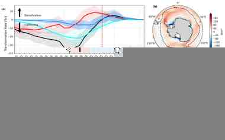
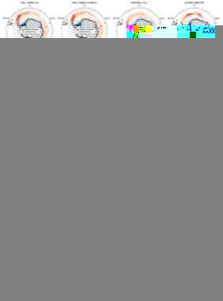

Sea-Ice-Driven WMT
Quantifying transformation pathways linked to Antarctic sea-ice growth, melt, brine rejection, freshwater redistribution, and density-binned WMT diagnostics.
Physical Oceanography & Climate Science
PhD candidate studying Antarctic sea ice, Southern Ocean water-mass transformation, ventilation, and carbon uptake in coupled climate models. Seeking postdoctoral and research scientist positions from 2026.
Profile
I am a PhD researcher at the University of Tasmania and the Australian Antarctic Program Partnership, and a member of COSIMA. My work investigates how Antarctic sea-ice processes shape water-mass transformation, freshwater redistribution, ocean ventilation, and carbon uptake across CMIP6 climate models.
Research
My research connects process diagnostics with climate-model evaluation, using density-binned analysis and inter-model comparison to understand why models diverge.
Quantifying transformation pathways linked to Antarctic sea-ice growth, melt, brine rejection, freshwater redistribution, and density-binned WMT diagnostics.
Diagnosing how surface forcing, stratification, and sea-ice freshwater fluxes regulate Southern Ocean ventilation and exchange with interior waters.
Testing how Southern Ocean physical processes modulate air-sea CO2 fluxes, carbon uptake, and inter-model spread across CMIP6 simulations.
Publications
Chen, Z., Hobbs, W., Chase, Z., & Zika, J. 2025. Journal of Geophysical Research: Oceans, 130(9), e2025JC022445. Contribution: diagnosed how Antarctic sea ice shapes Southern Ocean water-mass transformation across coupled climate models. DOI
Chen, Z., et al. Under review at Journal of Geophysical Research: Oceans. Focus: identifying process-level drivers of CMIP6 spread in sea-ice-driven transformation.
Chen, Z., et al. Manuscript in preparation. Focus: linking Southern Ocean ventilation pathways with regional air-sea carbon uptake.
Selected Visual Work
A compact visual summary of the analysis style behind the CV: density space, model spread, Southern Ocean ventilation, and air-sea carbon exchange.

Water-mass transformation diagnostics interpreted in density space using the 5-plot ensemble figure.

CMIP6 model comparison exposing robust structure and uncertainty in sea-ice dynamic tendency.

Air-sea carbon flux diagnostics linking Southern Ocean physical processes with CO2 uptake.
Academic CV
University of Tasmania, Australia; Australian Antarctic Program Partnership; COSIMA member. Thesis focus: sea-ice-driven water-mass transformation, Southern Ocean ventilation, and implications for heat and carbon uptake in CMIP6 models.
University of Tasmania, Australia. Honours thesis on the impact of land-fast sea ice breakup on phytoplankton bloom, awarded High Distinction.
Ocean University of China, China.
Conferences & Presentations
Selected conference presentations, posters, and workshop contributions from my PhD research programme.
Sea-ice processes as a driver of inter-model spread in Southern Ocean water-mass transformation.
How Antarctic sea ice impacts water-mass transformation.
Oral presentation on Southern Ocean sea-ice processes and climate-model diagnostics.
International workshop contribution connecting sea-ice processes, Southern Ocean transformation, and model evaluation.
Poster presentation; awarded Best Student Poster.
Methods
xarray, numpy, pandas, matplotlib, cartopy, xESMF, gsw, PyCO2SYS, intake-esm, ESGF workflows.
CMIP6 evaluation, density-bin analysis, WMT decomposition, ventilation metrics, inter-model spread.
Large-scale climate data processing on NCI Gadi, reproducible pipelines, and workflow automation.
Polar mapping, T-S diagrams, manuscript figures, conference posters, and research storytelling.
Contact
I am looking for roles where I can contribute to polar climate, ocean-ice interactions, Southern Ocean ventilation, and model-based carbon-cycle research.